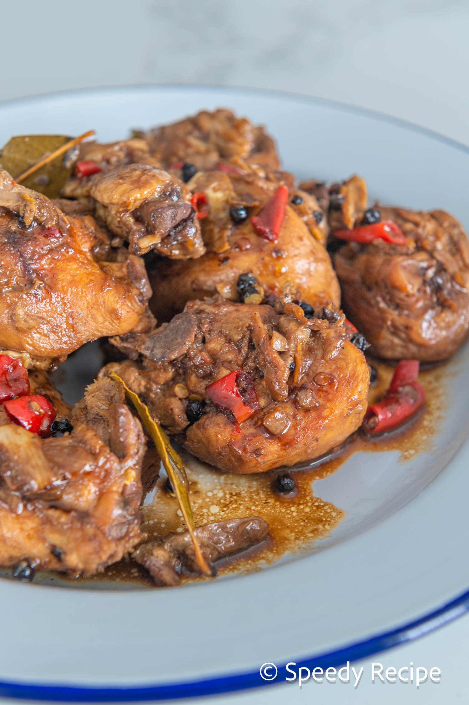

Adobong manok

Description
Delicious cooked chicken marinated by soy sauce, vinegar, garlic
, ginger, bay leaves and pepper.
Ingredients
- 2 lbs chicken
- 3 pieces dried bay leaves
- 6 tablespoons soy sauce
- 4 tablespoons white vinegar
- 5 cloves garlic
- 1 1/2 cups water
- 3 tablespoons cooking oil
- 1 teaspoon suga
- 1/4 teaspoon salt
- 1 teaspoon whole peppercorn
Steps
- Combine chicken, soy sauce, and garlic in a large bowl. Mix well. Marinate the chicken for at least 1 hour. Note: the longer the time, the better
2 lbs chicken, 6 tablespoons soy sauce
- Heat a cooking pot. Pour cooking oil.
3 tablespoons cooking oil
- When the oil is hot enough, pan-fry the marinated chicken for 2 minutes per side.
- Pour-in the remaining marinade, including garlic. Add water. Bring to a boil
1 1/2 cups water
- Add dried bay leaves and whole peppercorn. Simmer for 30 minutes or until the chicken gets tender
3 pieces dried bay leaves, 1 teaspoon whole peppercorn
- Add vinegar. Stir and cook for 10 minutes.
4 tablespoons white vinegar
- Put-in the sugar, and salt. Stir and turn the heat off.Serve hot. Share and Enjoy!
1 teaspoon sugar, 1/4 teaspoon salt